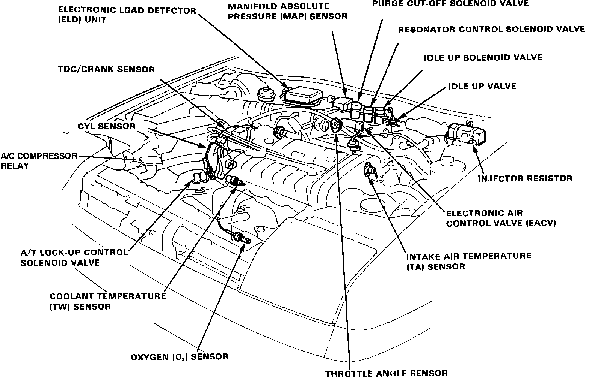
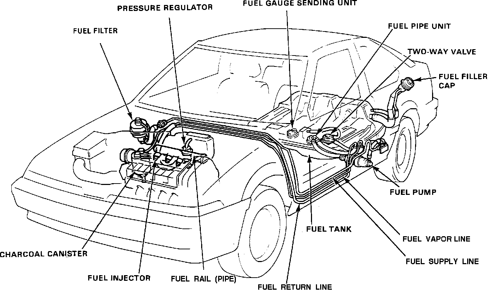
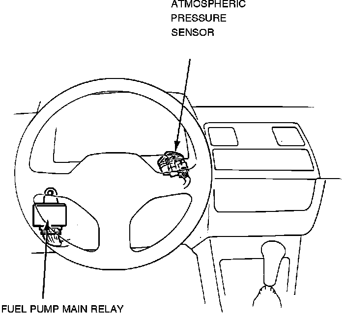

Powertrain Management: Locations
Fig. 1 Engine Compartment Locations:

Fig. 1
Fuel Lines:

Fig. 2
Fig. 14 Electronic Control Unit:

Fig. 3
Main Relay Location Fig. 4:

Fig. 4
A/C COMPRESSOR RELAY
The A/C compressor relay is mounted in the right front corner of the engine compartment, near the radiator filler neck. Fig. 1
AIR TEMPERATURE (TA) SENSOR
The TA sensor is mounted on the intake manifold threaded into the #1 cylinder intake runner. Fig. 1
ATMOSPHERIC PRESSURE (PA) SENSOR
The PA sensor is located under the dashboard behind the instrument cluster. Fig. 4
CYL SENSOR
The CYL sensor is mounted to the the right side of the cylinder head and is driven by the exhaust camshaft. Fig. 1
ELECTRIC LOAD DETECTOR
The electric load detector is located inside the main fuse box mounted on the firewall. Fig. 1
ELECTRONIC AIR CONTROL VALVE
The electronic air control valve is mounted to the back side of the intake manifold plenum. Fig. 1
ELECTRONIC CONTROL UNIT
The ECU is mounted to the floor panel under the front passenger seat. Fig. 3
INJECTORS
The fuel injectors are mounted to the intake manifold between the intake plenum and the cylinder head. Fig. 2
INJECTOR RESISTOR
The injector resistor is mounted at the rear of the engine compartment on the drivers side. Fig. 1
IDLE-UP SOLENOID
The idle up solenoid is mounted on the firewall near the center of the engine compartment. Fig. 1
IDLE-UP VALVE
The idle up valve is mounted on the firewall near the center of the engine compartment. Fig. 1
IGNITER
The igniter unit is located inside the distributor which is driven by the intake camshaft. Fig. 1
LOCK-UP CONTROL SOLENOID
The lock-up control solenoid is mounted to the top of the transaxle unit. Fig. 1
MAIN RELAY
The main relay is mounted under the dashboard near the rear of the fuse panel. Fig. 4
OXYGEN SENSOR
The oxygen sensor is threaded into the exhaust manifold near the center of the engine compartment. Fig. 1
PURGE CUT-OFF SOLENOID
The purge cut-off solenoid is mounted to the firewall near the center of the engine compartment. Fig. 1
RESONATOR CONTROL SOLENOID
The resonator control solenoid is mounted to the firewall near the center of the engine compartment. Fig. 1
TDC/CRANK SENSOR
The TDC/CRANK sensor is mounted inside the distributor which is driven by the intake camshaft. Fig. 1
THROTTLE ANGLE SENSOR
The throttle angle sensor is mounted the backside of the throttle valve in the engine compartment. Fig. 1
VEHICLE SPEED SENSOR
The vehicle speed sensor is built in to the speedometer assembly in the instrument cluster.
WATER TEMPERATURE (TW) SENSOR
The water temperature sensor is mounted on the right end of the cylinder head below the CYL sensor. Fig. 1